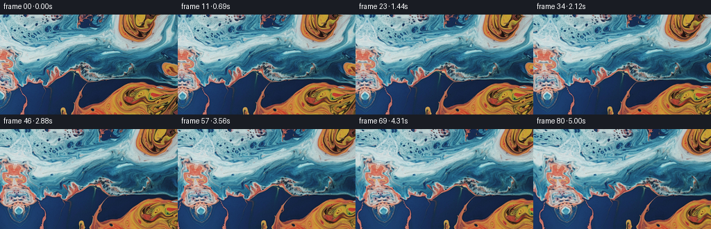

候选 01 · 2026-11-09T00:37:34.926622+00:00 · 点开播放与检查图
inspection.png

transition_check.png

代码变化
--- 上一保存版本
+++ 本次保存版本
@@ -0,0 +1,91 @@
+"""Animate the supplied liquid macro with an advected texture and a leftward pan.
+
+No external images or models: the fluid's color and fine marbling are sampled
+exclusively from the given first frame. A smooth divergence-free flow moves
+the pigment while an independent camera traverses left through the texture.
+"""
+from pathlib import Path
+import json
+import numpy as np
+from PIL import Image
+from scipy.ndimage import map_coordinates, spline_filter
+from artifact_io import save
+
+ROOT = Path(__file__).resolve().parent
+
+def velocity(x, y, t):
+ # Slowly evolving, overlapping stream-function eddies; pixel units/second.
+ u = np.zeros_like(x)
+ v = np.zeros_like(y)
+ eddies = [
+ (199., 11., 35., 30., 0.115),
+ (211., 126., 47., 27., -0.090),
+ (130., 67., 49., 22., -0.080),
+ (59., 43., 50., 24., 0.057),
+ (9., 84., 29., 27., -0.050),
+ (108., 5., 24., 19., -0.075),
+ (151., 103., 48., 39., 0.040),
+ (-24., 38., 40., 34., 0.057),
+ ]
+ modulation = 0.92 + 0.08*np.cos(0.45*t)
+ for cx, cy, rx, ry, spin in eddies:
+ dx, dy = x-cx, y-cy
+ g = np.exp(-0.5*((dx/rx)**2+(dy/ry)**2))
+ u += -spin*dy*(rx/ry)*g*modulation
+ v += spin*dx*(ry/rx)*g*modulation
+ # Broad irregular streaming with no change in fluid volume.
+ u += 0.44*np.sin(y/23. + x/77. + 0.16*t)
+ v -= 0.44*23./77.*np.sin(y/23. + x/77. + 0.16*t)
+ u += 0.18*np.sin(y/10. - x/29. - 0.23*t)
+ v += 0.18*10./29.*np.sin(y/10. - x/29. - 0.23*t)
+ return u, v
+
+
+def main():
+ spec = json.loads((ROOT/'task_spec.json').read_text())
+ image = np.asarray(Image.open(ROOT/'first_frame.png').convert('RGB'))
+ h, w = image.shape[:2]
+ yy, xx = np.mgrid[:h, :w].astype(np.float64)
+ coeffs = [spline_filter(image[:,:,c].astype(np.float64), order=3, mode='mirror') for c in range(3)]
+ frames = [image.copy()]
+ for i in range(1, spec['frames']):
+ t = i / spec['fps']
+ # Camera translates left: stationary scene details move to the right.
+ x = xx - 9.3*t
+ y = yy + 0.12*t
+ # Backtrace through the fluid to the reference texture, without repeatedly
+ # resampling frames (which would dissipate its intricate pigment ribbons).
+ n = max(1, int(np.ceil(t/0.10)))
+ dt = t/n
+ for j in range(n):
+ tau = t - j*dt
+ u, v = velocity(x, y, tau)
+ um, vm = velocity(x-0.5*dt*u, y-0.5*dt*v, tau-0.5*dt)
+ x -= dt*um
+ y -= dt*vm
+ # Continue edge pigment outside the photographed area. A nonuniform
+ # shear in the continuation prevents a rigid mirrored strip while
+ # retaining exact continuity at the source boundary.
+ outside = np.maximum(-x, 0.)
+ y += (1.-np.exp(-(outside/19.)**2))*(9.0*np.sin(y/36.+0.6) + 0.17*outside)
+ x += (1.-np.exp(-(outside/23.)**2))*2.7*np.sin(y/22.)
+ channels = [map_coordinates(c, [y,x], order=3, mode='mirror', prefilter=False) for c in coeffs]
+ frame = np.clip(np.rint(np.stack(channels, axis=-1)), 0, 255).astype(np.uint8)
+ frames.append(frame)
+ frames = np.stack(frames)
+ assert np.array_equal(frames[0], image)
+ save(frames, ROOT)
+ # A convenient ordinary video in addition to the exact RGB artifact.
+ try:
+ import cv2
+ output = cv2.VideoWriter(str(ROOT/'video.mp4'), cv2.VideoWriter_fourcc(*'mp4v'), spec['fps'], (w,h))
+ if output.isOpened():
+ for frame in frames:
+ output.write(cv2.cvtColor(frame, cv2.COLOR_RGB2BGR))
+ output.release()
+ except ImportError:
+ pass
+ print(f'Saved {len(frames)} RGB frames at {w}x{h}, {spec["fps"]} fps.')
+
+if __name__ == '__main__':
+ main()
命令 3 · 2026-11-09T00:37:30.049308+00:00/bin/bash -lc "cat > generate.py <<'PY'
\"\"\"Animate the supplied liquid macro with an advected texture and a leftward pan.
No external images or models: the fluid's color and fine marbling are sampled
exclusively from the given first frame. A smooth divergence-free flow moves
the pigment while an independent camera traverses left through the texture.
\"\"\"
from pathlib import Path
import json
import numpy as np
from PIL import Image
from scipy.ndimage import map_coordinates, spline_filter
from artifact_io import save
ROOT = Path(__file__).resolve().parent
def velocity(x, y, t):
# Slowly evolving, overlapping stream-function eddies; pixel units/second.
u = np.zeros_like(x)
v = np.zeros_like(y)
eddies = [
(199., 11., 35., 30., 0.115),
(211., 126., 47., 27., -0.090),
(130., 67., 49., 22., -0.080),
(59., 43., 50., 24., 0.057),
(9., 84., 29., 27., -0.050),
(108., 5., 24., 19., -0.075),
(151., 103., 48., 39., 0.040),
(-24., 38., 40., 34., 0.057),
]
modulation = 0.92 + 0.08*np.cos(0.45*t)
for cx, cy, rx, ry, spin in eddies:
dx, dy = x-cx, y-cy
g = np.exp(-0.5*((dx/rx)**2+(dy/ry)**2))
u += -spin*dy*(rx/ry)*g*modulation
v += spin*dx*(ry/rx)*g*modulation
# Broad irregular streaming with no change in fluid volume.
u += 0.44*np.sin(y/23. + x/77. + 0.16*t)
v -= 0.44*23./77.*np.sin(y/23. + x/77. + 0.16*t)
u += 0.18*np.sin(y/10. - x/29. - 0.23*t)
v += 0.18*10./29.*np.sin(y/10. - x/29. - 0.23*t)
return u, v
def main():
spec = json.loads((ROOT/'task_spec.json').read_text())
image = np.asarray(Image.open(ROOT/'first_frame.png').convert('RGB'))
h, w = image.shape[:2]
yy, xx = np.mgrid[:h, :w].astype(np.float64)
coeffs = [spline_filter(image[:,:,c].astype(np.float64), order=3, mode='mirror') for c in range(3)]
frames = [image.copy()]
for i in range(1, spec['frames']):
t = i / spec['fps']
# Camera translates left: stationary scene details move to the right.
x = xx - 9.3*t
y = yy + 0.12*t
# Backtrace through the fluid to the reference texture, without repeatedly
# resampling frames (which would dissipate its intricate pigment ribbons).
n = max(1, int(np.ceil(t/0.10)))
dt = t/n
for j in range(n):
tau = t - j*dt
u, v = velocity(x, y, tau)
um, vm = velocity(x-0.5*dt*u, y-0.5*dt*v, tau-0.5*dt)
x -= dt*um
y -= dt*vm
# Continue edge pigment outside the photographed area. A nonuniform
# shear in the continuation prevents a rigid mirrored strip while
# retaining exact continuity at the source boundary.
outside = np.maximum(-x, 0.)
y += (1.-np.exp(-(outside/19.)**2))*(9.0*np.sin(y/36.+0.6) + 0.17*outside)
x += (1.-np.exp(-(outside/23.)**2))*2.7*np.sin(y/22.)
channels = [map_coordinates(c, [y,x], order=3, mode='mirror', prefilter=False) for c in coeffs]
frame = np.clip(np.rint(np.stack(channels, axis=-1)), 0, 255).astype(np.uint8)
frames.append(frame)
frames = np.stack(frames)
assert np.array_equal(frames[0], image)
save(frames, ROOT)
# A convenient ordinary video in addition to the exact RGB artifact.
try:
import cv2
output = cv2.VideoWriter(str(ROOT/'video.mp4'), cv2.VideoWriter_fourcc(*'mp4v'), spec['fps'], (w,h))
if output.isOpened():
for frame in frames:
output.write(cv2.cvtColor(frame, cv2.COLOR_RGB2BGR))
output.release()
except ImportError:
pass
print(f'Saved {len(frames)} RGB frames at {w}x{h}, {spec[\"fps\"]} fps.')
if __name__ == '__main__':
main()
PY
python generate.py"exit 0